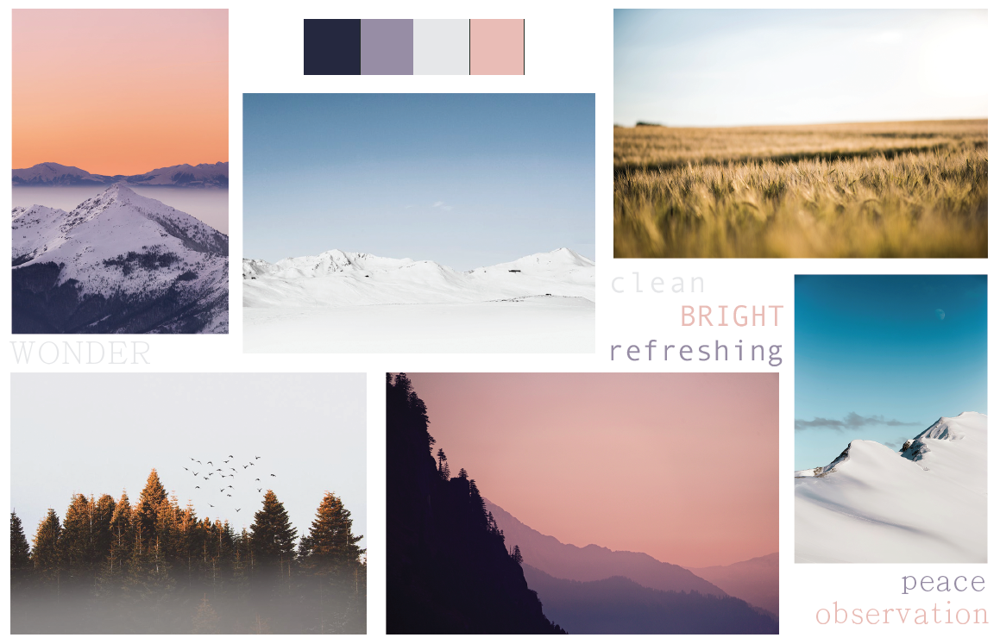
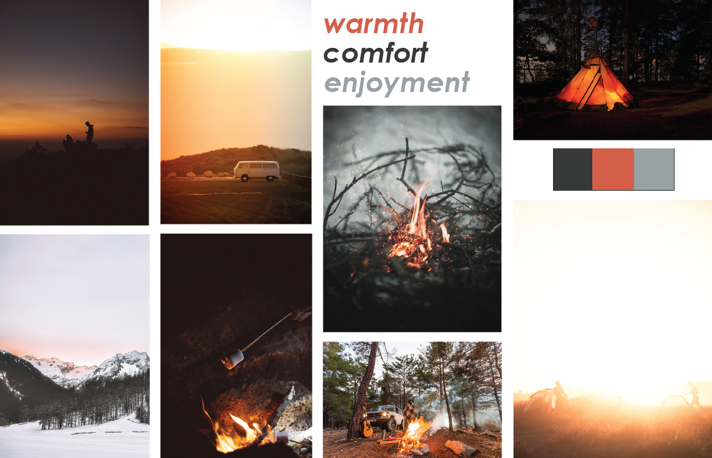
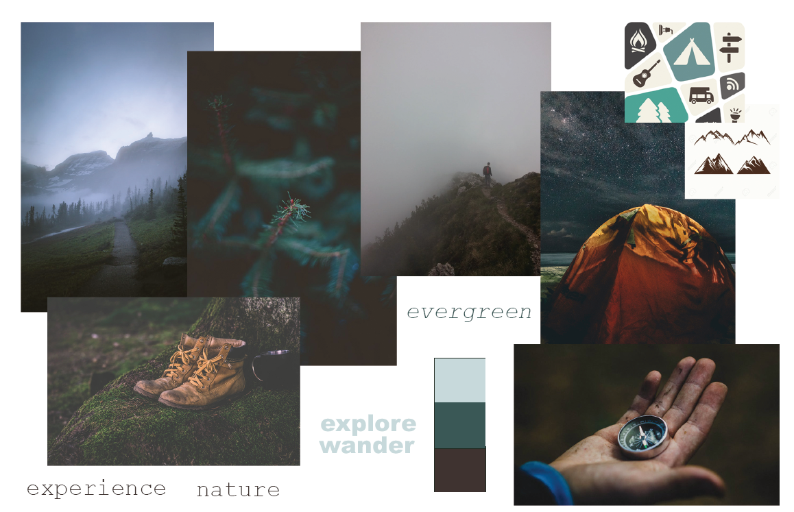

I created this project for my New Media Design and Development 1 class, where we learned how to use Illustrator and Photoshop. The goal of this project was to design the landing page for a website that would serve a specific purpose, focusing in on a topic that a need exists for. My site is intended for people who enjoy camping, but find the process of finding a specific site type (such as camper, tent, primitive) in the area they want to go without having to check multiple websites to find what they want. Basically streamlining the process of finding a campsite by centralizing all of the sites data onto one site. Similar to how hotel deal sites have a bunch of different hotel chains listed, although mine is of campsites and not deals.
To begin the project, we had to brainstorm a certain number of ideas and then choose one, based on which idea was the most unique and a site did not already exist for. Additionally we had to brainstorm a general layout idea, although most of the design was left for the moodboards and such.
We were tasked to come up with 3 different moodboards that we would want our site to follow and then choose one. This was the first time I had really done moodboards so it was an interesting experience, one that I would definitly do again. I hope to eventually use all of the moodboards for some form of a project, maybe potentially creating 3 different designs for this one site. The moodboards I didn't use:
 The moodboard I used:
After we chose our moodboard, we had to develop two different styleguides for our site and then choose one of them. The styleguides must be based off of the moodboard we chose and both present a different concept for the site. These unfortunately seem to be lost in my files, but if I find them I will add them.
For this being my first time that I actually had to design a website, I think I did pretty well. At this point I have been working on website design for a year and there is not much that I would change, but I would add a lot more to the page. One critique that I got was that the overall theme and imagery of the site was too dark, although my intention was to make it look mysterious and like an adventure, but I would agree now and change it slightly. This was also the first time that I actually used photoshop to create something like this, so there was somewhat of a learning curve involved.